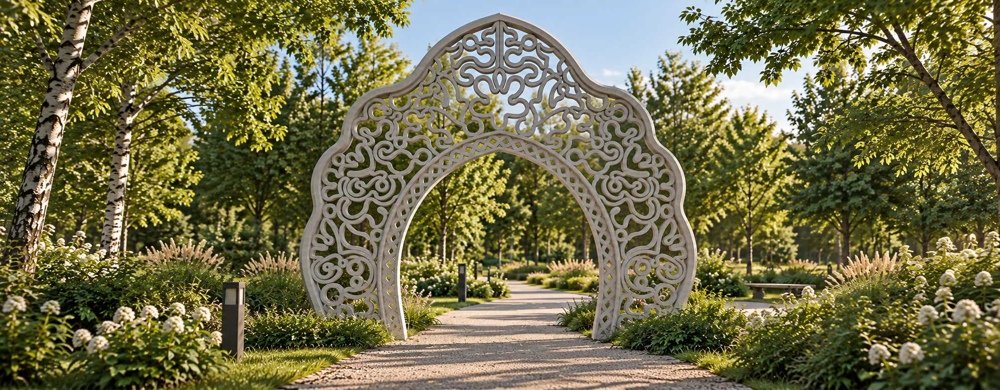
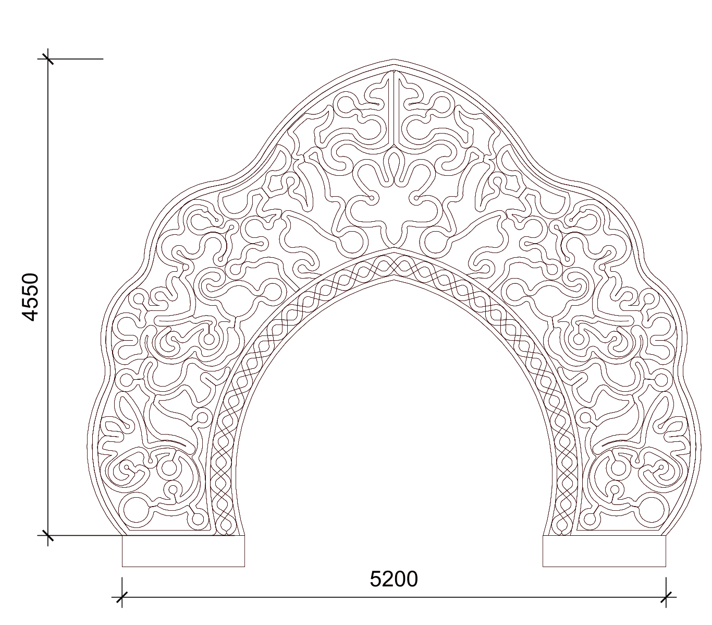
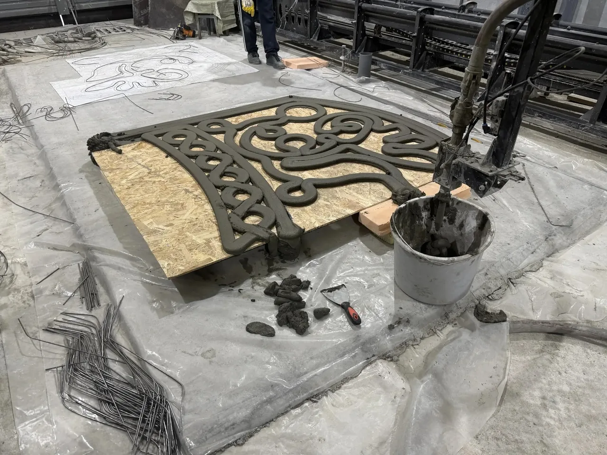

01 / О ПРОЕКТЕ
Знакомый образ.
Новое прочтение.
Кокошник — узнаваемый образ русской культуры. В проекте арки его силуэт становится архитектурой: ажурный орнамент обрамляет проход и открывает взгляд на пространство за ним.
Плавные линии, симметрия и ритм узора соединяют традиционный мотив с возможностями современного производства.
- Ширина
- 5,20 м
- Высота
- 4,55 м

02 / ПРОИЗВОДСТВО
Технология
От цифрового рисунка
к объёмному орнаменту.
Аддитивная технология позволяет создавать сложную геометрию послойно. Печатная головка проходит по заданной траектории, постепенно формируя рисунок из строительной смеси.
Так орнамент получает объём, а цифровая модель становится осязаемой архитектурной деталью.
Цифровая модельПослойная печать

03 / ЛЮДИ ПРОЕКТА
Проектная команда
Архитекторы
- Веревкина Ирина
- Лиханова Елена
Конструкторы
- Жаныбеков Жамшитбек
- Сарычев Антон
- Шариков Тимофей
Технический оператор
- Иглевский Иван
ИТ-специалисты
- Клыжко Владимир
- Майбах Артем